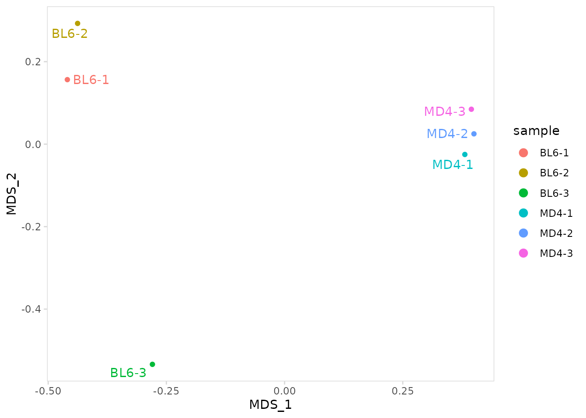
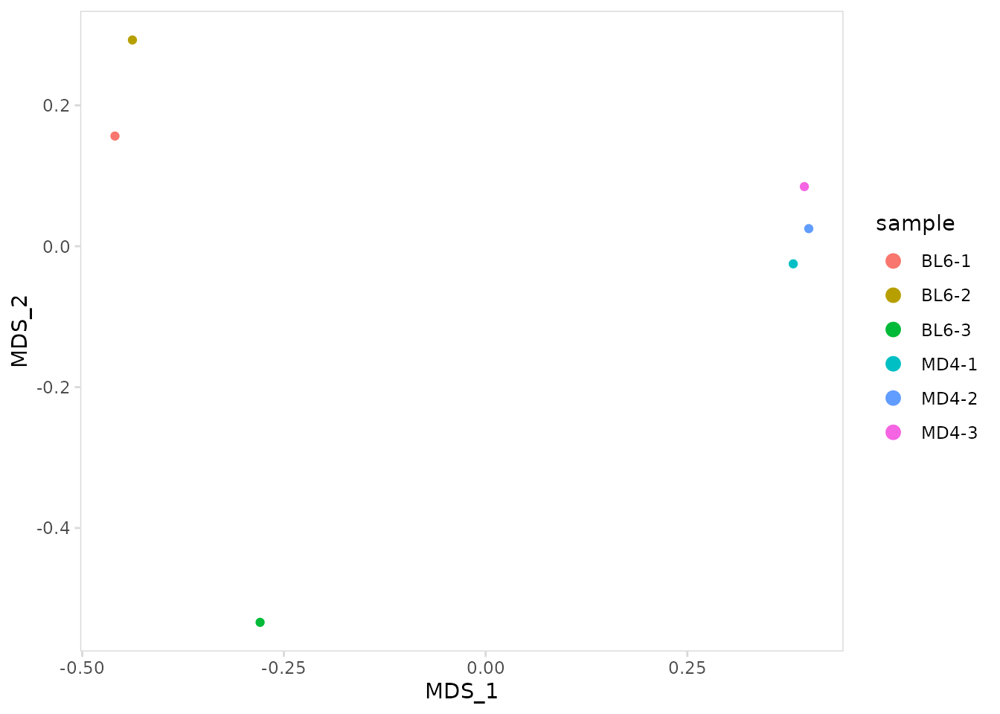

This vignette provides detailed examples for quantifying repertoire overlap between samples. For the examples shown below, we use data for splenocytes from BL6 and MD4 mice collected using the 10X Genomics scRNA-seq platform. MD4 B cells are monoclonal and specifically bind hen egg lysozyme.
library(djvdj)
library(Seurat)
library(ggplot2)
library(RColorBrewer)
# Add V(D)J data to object
vdj_dirs <- c(
BL6 = system.file("extdata/splen/BL6_BCR", package = "djvdj"),
MD4 = system.file("extdata/splen/MD4_BCR", package = "djvdj")
)
so <- splen_so |>
import_vdj(vdj_dirs, define_clonotypes = "cdr3_gene")Calculating repertoire overlap
The calc_similarity() function will calculate repertoire
overlap between clusters and add the results in the object meta.data.
This function is designed to specifically work with the R package abdiv. The similarity
metric to use for calculations can be selected by passing the name of
the function to the method argument. Any beta diversity
function from the abdiv package that takes species counts as input can
be used. Be sure to read the documentation for the function you are
using to ensure it is appropriate for your analysis.
In this example we are calculating the Jaccard dissimilarity index for BL6 and MD4 samples. With this metric, a value close to 0 indicates that the samples have a high number of shared clonotypes.
Jaccard dissimilarity is calculated using the following equation, where \(a\) is the number of species present in both x and y, \(b\) is the number of species present in y but not x, and \(c\) is the number of species present in x but not y.
\[ 1 - {a \over a + b + c} \]
so_vdj <- so |>
calc_similarity(
data_col = "clonotype_id",
cluster_col = "sample",
method = abdiv::jaccard
)Similarity metrics can also be calculated for a specific chain. To do
this, the column passed to the data_col argument must
contain per-chain data, such as CDR3 amino acid or nucleotide sequences.
In this example similarity is calculated based on heavy chain CDR3
sequences.
so_vdj <- so |>
calc_similarity(
data_col = "cdr3_nt",
cluster_col = "sample",
chain = "IGH"
)Instead of adding the results to the object meta.data, a matrix can also be returned.
so |>
calc_similarity(
data_col = "clonotype_id",
cluster_col = "sample",
return_mat = TRUE
)
#> BL6-1 BL6-2 BL6-3 MD4-1 MD4-2 MD4-3
#> BL6-1 0.0000000 0.9639640 0.9696970 1.0000000 1.0000000 0.9830508
#> BL6-2 0.9639640 0.0000000 0.9813084 1.0000000 1.0000000 0.9848485
#> BL6-3 0.9696970 0.9813084 0.0000000 0.9807692 1.0000000 1.0000000
#> MD4-1 1.0000000 1.0000000 0.9807692 0.0000000 0.8571429 0.9000000
#> MD4-2 1.0000000 1.0000000 1.0000000 0.8571429 0.0000000 0.8750000
#> MD4-3 0.9830508 0.9848485 1.0000000 0.9000000 0.8750000 0.0000000Plotting overlap
The plot_similarity() function will create plots
summarizing repertoire overlap between samples. By default, Jaccard
dissimilarity will be calculated and plotted as a heatmap. For this
example, none of the samples show strong overlap. This may seem
surprising since the MD4 samples are mainly composed of a single
clonotype and should have a very similar repertoire. However, the
Jaccard index is only measuring the number of overlapping clonotypes and
is not influenced by clonotype abundance.
so |>
plot_similarity(
data_col = "clonotype_id",
cluster_col = "sample"
)A metric that takes into account clonotype abundance is the Horn-Morisita index. This metric measures the probability that clonotypes drawn from each sample will be different. Values close to 0 indicate high similarity. In this example we see that when clonotype abundance is taken into account, the MD4 samples appear very similar to each other.
so |>
plot_similarity(
data_col = "clonotype_id",
cluster_col = "sample",
method = abdiv::horn_morisita
)
The appearance of the heatmap can be modified with additional
arguments. Setting cluster_heatmap to FALSE
will remove the dendrograph. The remove_upper_triangle
argument can be used to only plot the lower triangle of the heatmap. The
plot_colors argument will adjust the color gradient.
Additional parameters can be passed directly to
ComplexHeatmap::Heatmap().
so |>
plot_similarity(
data_col = "clonotype_id",
cluster_col = "sample",
method = abdiv::horn_morisita,
plot_colors = c("#3182bd", "white", "#fec44f"),
cluster_heatmap = FALSE,
remove_upper_triangle = TRUE,
name = "Horn-Morisita" # parameter to pass to Heatmap()
)Circos plot
A circos plot can be created by setting the method
argument to ‘circos’. This plot will summarize the number of clonotypes
overlapping between samples. The group_col argument can be
used to split the graph into distinct sections based on a grouping
variable.
The number of overlapping clonotypes is shown as the axis labels for
each sample. The width of each link reflects the number of clonotypes
shared between the samples. Labels can be rotated to eliminate
overlapping text using the rotate_labels argument.
so |>
plot_similarity(
data_col = "clonotype_id",
cluster_col = "sample",
group_col = "orig.ident",
method = "circos",
rotate_labels = TRUE
)Plot colors can be modified using the plot_colors
argument, additional parameters can be passed directly to
circlize::chordDiagram(). In this example we scale the plot
so each sample is the same width.
so |>
plot_similarity(
data_col = "clonotype_id",
cluster_col = "sample",
group_col = "orig.ident",
method = "circos",
plot_colors = brewer.pal(10, "Spectral"),
scale = TRUE # parameter to pass to chordDiagram()
)MDS plot
Multidimensional scaling (MDS) can be used to visualize the overall
similarity between repertoires. The calc_mds() function
will calculate MDS coordinates using either the Jaccard dissimilarity
index or the Horn-Morisita index. The method can be specified using the
method argument. MDS coordinates will get added to the
meta.data.
so_vdj <- so |>
calc_mds(
data_col = "clonotype_id",
cluster_col = "sample",
method = "horn_morisita"
)The plot_mds() function will create an MDS plot with
labels added for each sample.
so |>
plot_mds(
data_col = "clonotype_id",
cluster_col = "sample"
)
ggplot2 functions can be used to further adjust plot aesthetics, or
additional arguments can be passed directly to ggplot2,
e.g. size, shape, etc.
so |>
plot_mds(
data_col = "clonotype_id",
cluster_col = "sample",
size = 4, # parameters to pass to ggplot
shape = 2
) +
ggplot2::theme(legend.position = "none")
To remove sample labels, set label_points to
FALSE.
so |>
plot_mds(
data_col = "clonotype_id",
cluster_col = "sample",
label_points = FALSE
)
Session info
#> R version 4.3.0 (2023-04-21)
#> Platform: x86_64-pc-linux-gnu (64-bit)
#> Running under: Ubuntu 22.04.2 LTS
#>
#> Matrix products: default
#> BLAS: /usr/lib/x86_64-linux-gnu/openblas-pthread/libblas.so.3
#> LAPACK: /usr/lib/x86_64-linux-gnu/openblas-pthread/libopenblasp-r0.3.20.so; LAPACK version 3.10.0
#>
#> locale:
#> [1] LC_CTYPE=C.UTF-8 LC_NUMERIC=C LC_TIME=C.UTF-8
#> [4] LC_COLLATE=C.UTF-8 LC_MONETARY=C.UTF-8 LC_MESSAGES=C.UTF-8
#> [7] LC_PAPER=C.UTF-8 LC_NAME=C LC_ADDRESS=C
#> [10] LC_TELEPHONE=C LC_MEASUREMENT=C.UTF-8 LC_IDENTIFICATION=C
#>
#> time zone: UTC
#> tzcode source: system (glibc)
#>
#> attached base packages:
#> [1] stats graphics grDevices utils datasets methods base
#>
#> other attached packages:
#> [1] RColorBrewer_1.1-3 ggplot2_3.4.2 SeuratObject_4.1.3
#> [4] Seurat_4.3.0 djvdj_0.1.0
#>
#> loaded via a namespace (and not attached):
#> [1] RcppAnnoy_0.0.20 splines_4.3.0
#> [3] later_1.3.1 bitops_1.0-7
#> [5] tibble_3.2.1 polyclip_1.10-4
#> [7] lifecycle_1.0.3 doParallel_1.0.17
#> [9] rprojroot_2.0.3 globals_0.16.2
#> [11] lattice_0.21-8 vroom_1.6.3
#> [13] MASS_7.3-58.4 backports_1.4.1
#> [15] magrittr_2.0.3 plotly_4.10.1
#> [17] sass_0.4.6 rmarkdown_2.21
#> [19] jquerylib_0.1.4 yaml_2.3.7
#> [21] httpuv_1.6.9 sctransform_0.3.5
#> [23] sp_1.6-0 spatstat.sparse_3.0-1
#> [25] reticulate_1.28 cowplot_1.1.1
#> [27] pbapply_1.7-0 abind_1.4-5
#> [29] zlibbioc_1.46.0 Rtsne_0.16
#> [31] GenomicRanges_1.52.0 purrr_1.0.1
#> [33] BiocGenerics_0.46.0 RCurl_1.98-1.12
#> [35] circlize_0.4.15 GenomeInfoDbData_1.2.10
#> [37] IRanges_2.34.0 S4Vectors_0.38.1
#> [39] ggrepel_0.9.3 irlba_2.3.5.1
#> [41] listenv_0.9.0 spatstat.utils_3.0-2
#> [43] goftest_1.2-3 spatstat.random_3.1-4
#> [45] fitdistrplus_1.1-11 parallelly_1.35.0
#> [47] pkgdown_2.0.7 leiden_0.4.3
#> [49] codetools_0.2-19 DelayedArray_0.26.2
#> [51] tidyselect_1.2.0 shape_1.4.6
#> [53] farver_2.1.1 matrixStats_0.63.0
#> [55] stats4_4.3.0 spatstat.explore_3.1-0
#> [57] jsonlite_1.8.4 GetoptLong_1.0.5
#> [59] ellipsis_0.3.2 ggtrace_0.2.0
#> [61] progressr_0.13.0 ggridges_0.5.4
#> [63] survival_3.5-5 iterators_1.0.14
#> [65] systemfonts_1.0.4 foreach_1.5.2
#> [67] tools_4.3.0 ragg_1.2.5
#> [69] ica_1.0-3 Rcpp_1.0.10
#> [71] glue_1.6.2 gridExtra_2.3
#> [73] xfun_0.39 MatrixGenerics_1.12.0
#> [75] GenomeInfoDb_1.36.0 dplyr_1.1.2
#> [77] withr_2.5.0 fastmap_1.1.1
#> [79] boot_1.3-28.1 fansi_1.0.4
#> [81] digest_0.6.31 R6_2.5.1
#> [83] mime_0.12 textshaping_0.3.6
#> [85] colorspace_2.1-0 scattermore_1.0
#> [87] tensor_1.5 spatstat.data_3.0-1
#> [89] utf8_1.2.3 tidyr_1.3.0
#> [91] generics_0.1.3 data.table_1.14.8
#> [93] httr_1.4.5 htmlwidgets_1.6.2
#> [95] S4Arrays_1.0.1 uwot_0.1.14
#> [97] pkgconfig_2.0.3 gtable_0.3.3
#> [99] ComplexHeatmap_2.16.0 lmtest_0.9-40
#> [101] SingleCellExperiment_1.22.0 XVector_0.40.0
#> [103] htmltools_0.5.5 clue_0.3-64
#> [105] scales_1.2.1 Biobase_2.60.0
#> [107] png_0.1-8 knitr_1.42
#> [109] tzdb_0.3.0 reshape2_1.4.4
#> [111] rjson_0.2.21 nlme_3.1-162
#> [113] cachem_1.0.8 zoo_1.8-12
#> [115] GlobalOptions_0.1.2 stringr_1.5.0
#> [117] KernSmooth_2.23-20 parallel_4.3.0
#> [119] miniUI_0.1.1.1 desc_1.4.2
#> [121] pillar_1.9.0 grid_4.3.0
#> [123] vctrs_0.6.2 RANN_2.6.1
#> [125] promises_1.2.0.1 xtable_1.8-4
#> [127] cluster_2.1.4 evaluate_0.20
#> [129] readr_2.1.4 cli_3.6.1
#> [131] compiler_4.3.0 rlang_1.1.1
#> [133] crayon_1.5.2 abdiv_0.2.0
#> [135] future.apply_1.10.0 labeling_0.4.2
#> [137] plyr_1.8.8 fs_1.6.2
#> [139] stringi_1.7.12 viridisLite_0.4.2
#> [141] deldir_1.0-6 munsell_0.5.0
#> [143] lazyeval_0.2.2 spatstat.geom_3.1-0
#> [145] Matrix_1.5-4 hms_1.1.3
#> [147] patchwork_1.1.2 bit64_4.0.5
#> [149] future_1.32.0 shiny_1.7.4
#> [151] highr_0.10 SummarizedExperiment_1.30.1
#> [153] ROCR_1.0-11 igraph_1.4.2
#> [155] broom_1.0.4 memoise_2.0.1
#> [157] bslib_0.4.2 bit_4.0.5